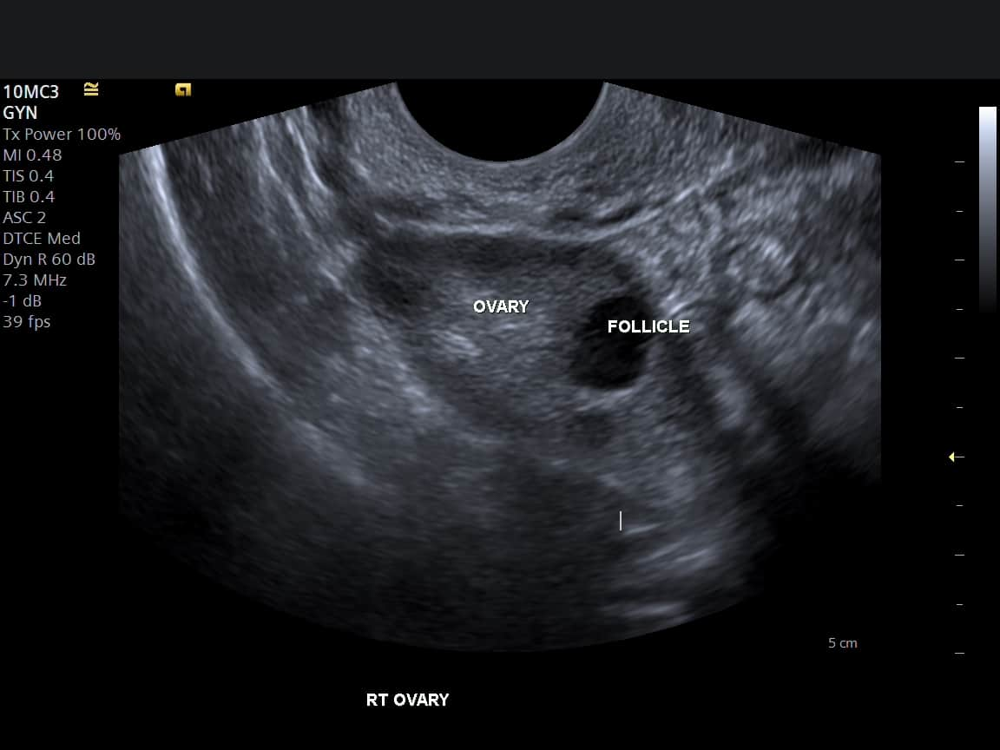

The Best Anti-Inflammatory Diet for PCOS Management
Discover how a low-glycaemic, anti-inflammatory diet can help manage insulin resistance, reduce androgen levels, and improve hormonal balance in PCOS.

Exercise Guide for Women with PCOS: What Works Best
A combination of strength training and cardio can significantly improve insulin sensitivity, support weight management, and reduce PCOS symptoms.
Managing Anxiety and Depression Linked to PCOS
PCOS significantly increases the risk of depression and anxiety. Learn practical strategies for mental wellness including CBT, mindfulness, and community support.

Understanding Insulin Resistance in PCOS
Up to 70% of women with PCOS have insulin resistance. Learn how it affects your body, why it matters, and what you can do about it through lifestyle and medical approaches.

PCOS and Fertility: What You Need to Know
PCOS is one of the leading causes of female infertility, but most women with PCOS can conceive with the right treatment. Understand your options from lifestyle to IVF.

Why Sleep Is Critical for PCOS Management
Poor sleep worsens insulin resistance, disrupts hormone balance, and increases cortisol in PCOS. Discover evidence-backed sleep hygiene strategies tailored for PCOS.